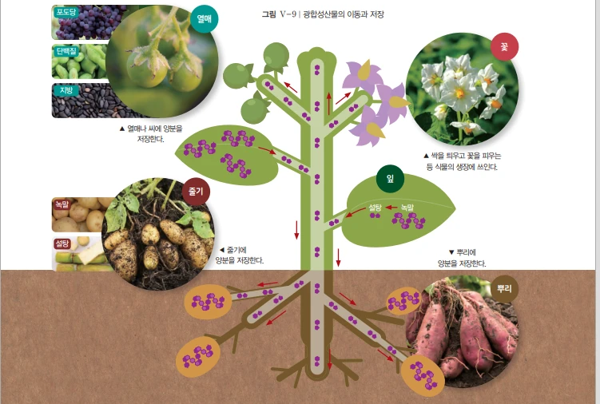
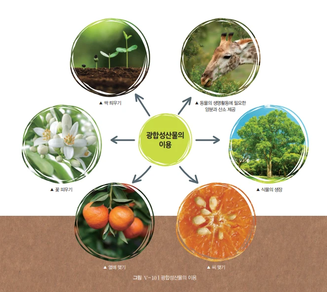
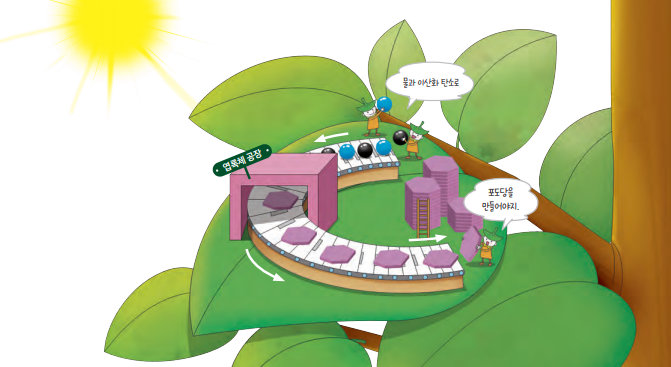

식물은 광합성으로 만든 포도당을 여러 형태의 양분으로 바꾸어 이동시키고 저장합니다. 자료를 읽고 개념정리활동지와 워크시트를 풀어 보세요. 제출하면 바로 채점되고, 선생님 스프레드시트에도 자동으로 기록돼요.
식물은 광합성으로 만든 포도당을 여러 가지 형태의 양분으로 바꾸기 때문에 초식동물은 식물로부터 다양한 양분을 얻을 수 있다. 엽록체에서 만들어진 포도당은 녹말로 바뀌어 잠시 저장되고, 체관을 통하여 각 기관으로 운반될 때는 물에 잘 녹는 설탕으로 바뀐다.

식물은 광합성으로 만든 양분을 스스로 살아가는 데 필요한 에너지원으로 쓰거나, 식물을 구성하는 성분으로 바꿔 생장에 이용한다. 여러 가지 생명활동에 사용되고 남은 양분의 일부는 엽록체에, 일부는 저장 기관에 저장된다. 식물의 저장 기관에는 뿌리, 줄기, 열매, 씨 등이 있는데, 식물마다 다양한 형태로 양분을 바꾸어 저장한다.
광합성으로 만들어진 양분은 식물이 스스로 이용하기도 하지만, 사람을 비롯한 다른 생물이 살아가는 데 필요한 양분으로도 이용된다. 따라서 광합성은 지구의 다양한 생물에게 생명활동에 필요한 에너지원을 제공하는 중요한 과정이다. 만약 식물이 광합성을 하지 않으면 동물도 생명활동에 필요한 양분과 산소를 얻을 수 없어 식물과 동물 모두 생명을 유지하기 어렵다.

다음 그림에서 광합성산물이 생성되고 난 뒤 이어질 상황을 생각해 보고, 그 내용을 바탕으로 광합성산물이 다양한 형태로 저장되고 이용되는 과정을 아래 표에 정리해 보자.

| 과정 | 장소 | 내용 |
|---|---|---|
| 광합성 | 엽록체 | 빛에너지를 이용하여 이산화 탄소와 물로 포도당과 산소를 만든다. |
| 이동하기 | 포도당을 물에 잘 녹는 (으)로 바꾸어 각 기관으로 운반한다. | |
| 사용하기 | 생명활동에 필요한 (으)로 쓴다. | |
| 저장하기 | 지방·단백질· 등 다양한 형태로 저장한다. |